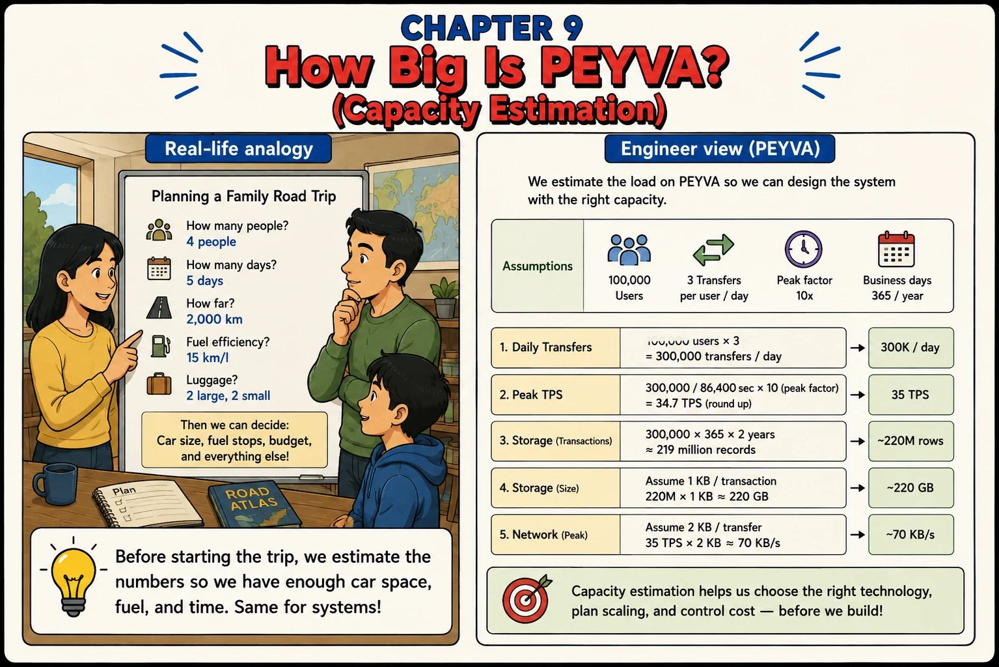

Chapter 9
How Big Is PEYVA? (Capacity Estimation)
Before starting the trip, we estimate the numbers so we have enough car space, fuel, and time. Same for systems.

1. Intuition
- Everything so far runs comfortably on one laptop with one user.
- Before peyva can handle real growth, do the same math a family does before a road trip: how many people, how far, how much fuel.
- That means estimating users, traffic, and storage before choosing how to scale.
2. Concepts
- Assumptions. The starting numbers you estimate: users, transfers per user per day, peak factor, time window.
- Peak Factor. How much busier the system gets at its busiest moment compared to its average. Traffic isn't flat.
- TPS. Transactions per second: the rate the system must actually sustain at peak, not on average.
- Storage Growth. How much disk space the system needs over time, based on transaction volume and record size.
3. Under the Hood
- Assumptions: 100,000 users, 3 transfers/user/day, 10x peak factor, 365 calendar days/year.
- 1. Daily Transfers: 100,000 x 3 = 300,000 transfers/day.
- 2. Peak TPS: 300,000 / 86,400 sec x 10 (peak factor) = ~35 TPS (round up).
- 3. Storage (Transactions): 300,000 x 365 x 2 years = ~219 million rows.
- 4. Storage (Size): assume 1 KB/transaction, 219M x 1 KB = ~220 GB.
- 5. Network (Peak): assume 2 KB/transfer, 35 TPS x 2 KB = ~70 KB/s.
4. Build It Hands-on
- No component this chapter. Size what you have before you grow it.
Self-Ask. Self-Ask makes the assistant pose the follow-up questions its answer depends on, answer each one on the record, and only then give the final number. On an estimate that converts hidden guesses into a list of assumptions you can argue with.
Documented in The Prompt Report: Zero-Shot, Self-Ask
I need to size the infrastructure for a payments system that moves money between accounts. Don't give me a number yet. First work out which follow-up questions the estimate genuinely depends on, and write them out. Answer each one yourself with an explicit assumption, and label where that assumption came from: industry norm, your own guess, or arithmetic from an earlier answer. Then use your own answers to work out peak payments per second, Ledger growth over two years, and peak network throughput. Show each formula with the numbers substituted in, so I can check the arithmetic rather than trust it. Then tell me which single assumption the estimate is most sensitive to, what the number becomes if you're wrong about it by a factor of two, and which of your assumptions you most want me to confirm. Done when I have a peak-throughput figure and a two-year storage figure I can defend, a written list of the assumptions behind them, and I know which one to revisit first.
5. Break It Test it
- Bad assumptions produce bad capacity plans. See how sensitive the numbers are.
- Double the peak factor from 10x to 20x and recompute peak TPS. See how much extra headroom that alone demands.
- Assume 5 KB/transaction instead of 1 KB and recompute storage. The disk budget changes dramatically for the same transfer volume.
- Measure how many transfers one instance actually sustains, then hold that against the 35 a second the estimate demands. The gap between the two is what Chapter 10 exists to close.
Quick tip: Being roughly right before you build beats being exactly right after.